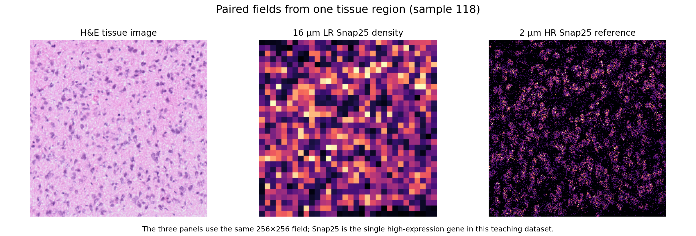
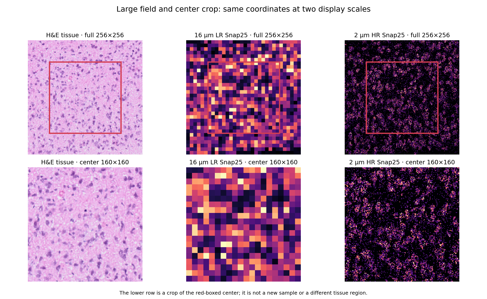
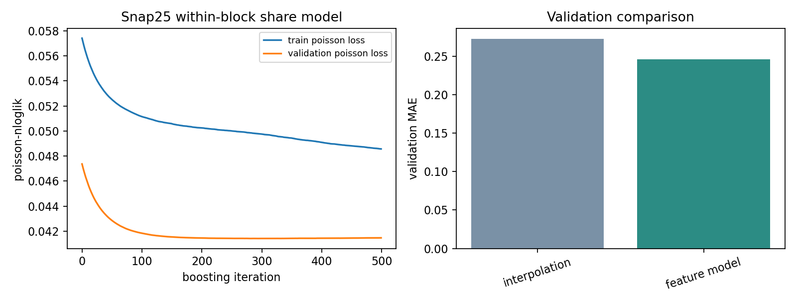
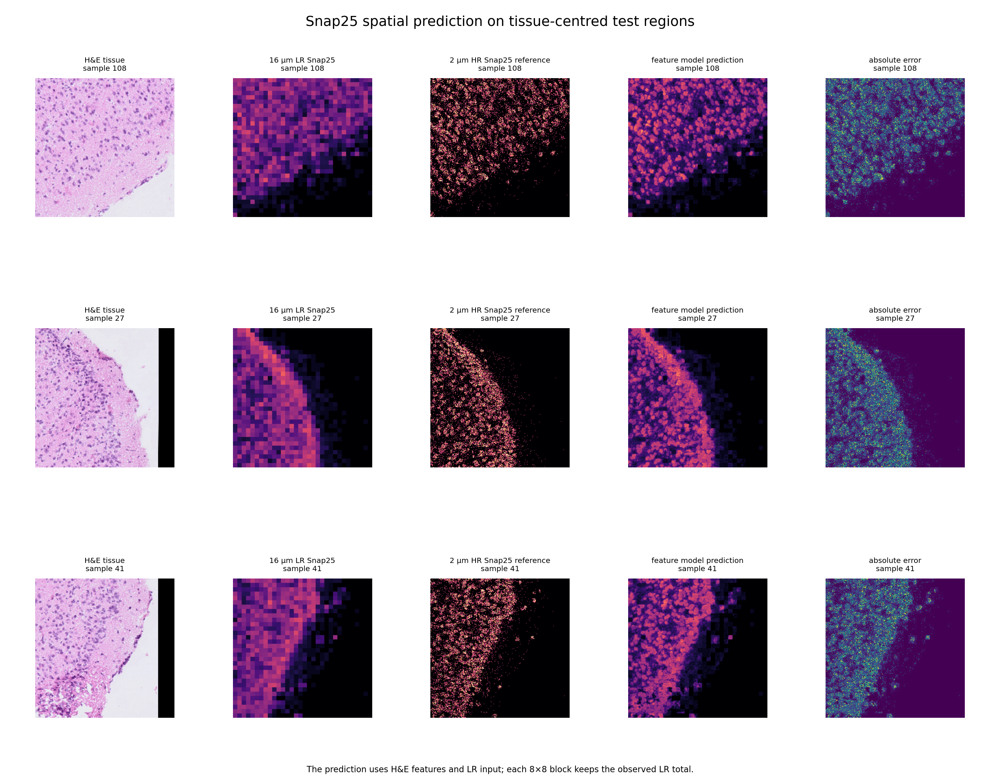

KYDW 本科生科研入门体验项目
实践项目参考答案 05：空间转录组表达超分辨率
使用同一组织区域的配对 H&E、16 μm LR 和 2 μm HR 数据，只预测高表达基因 Snap25；先阅读大图与中心小图，再用带正则化的 XGBoost Poisson 模型从 H&E 局部特征和 LR 观测建立表达份额，并检查 8×8 总量约束、验证指标和空间图。
参考答案展示一种完整写法，代码中的路径和参数可以根据运行环境调整。打开公开 Kaggle Notebook 后，先复制到自己的账户，再运行并观察每一步输出。
任务对应关系
题目 Notebook 的任务顺序与下面的完整脚本一致：数据读取和核对、基线或输入可视化、模型结构、训练与验证、测试评价和结果文件。
先阅读各任务的输入与输出，再查看完整代码。结果图与指标文件来自同一份课程数据。
完整参考脚本
以下代码可以从头运行。它会自动查找 Kaggle 已挂载的数据集，并把图像与 JSON 写入 /kaggle/working。
from __future__ import annotations
import argparse
import json
import random
from pathlib import Path
import matplotlib.pyplot as plt
import numpy as np
import pandas as pd
import torch
import torch.nn as nn
import torch.nn.functional as F
from matplotlib import colors as mcolors
from matplotlib.patches import Rectangle
from sklearn.ensemble import HistGradientBoostingClassifier, RandomForestClassifier
from sklearn.compose import ColumnTransformer
from sklearn.impute import SimpleImputer
from sklearn.inspection import permutation_importance
from sklearn.linear_model import LogisticRegression
from sklearn.metrics import (
accuracy_score,
average_precision_score,
classification_report,
confusion_matrix,
f1_score,
precision_recall_curve,
roc_curve,
)
from sklearn.model_selection import train_test_split
from sklearn.pipeline import Pipeline
from sklearn.preprocessing import LabelEncoder, OneHotEncoder, StandardScaler, label_binarize
from torch.utils.data import DataLoader, Dataset
from xgboost import XGBClassifier, XGBRegressor
SEED = 42
random.seed(SEED)
np.random.seed(SEED)
torch.manual_seed(SEED)
torch.set_num_threads(min(4, max(1, torch.get_num_threads())))
def save_json(path: Path, value: dict):
path.write_text(json.dumps(value, ensure_ascii=False, indent=2), encoding="utf-8")
def _choose_spatial_sample(he, lr, hr, split, kind):
"""Prefer a central, tissue-filled paired field with visible expression."""
candidates = np.where(split == kind)[0]
black_ratio = (he[candidates].mean(axis=1) < 0.03).mean(axis=(1, 2))
signal_ratio = (hr[candidates] > 0).mean(axis=(1, 2, 3))
lr_ratio = (lr[candidates] > 0).mean(axis=(1, 2, 3))
score = signal_ratio + 0.15 * lr_ratio - 1.5 * black_ratio
return int(candidates[np.argmax(score)])
def _expression_vmax(values):
nonzero = values[values > 0]
if nonzero.size == 0:
return 1.0
return float(max(np.percentile(nonzero, 99), nonzero.max() * 0.35, 1e-3))
def run_project05(data_path: Path, output: Path):
"""Run a one-gene, conservation-aware Snap25 prediction reference workflow."""
output.mkdir(parents=True, exist_ok=True)
data = np.load(data_path, allow_pickle=True) # 读取课程准备的配对数据
he = data["he"].astype(np.float32) / 255.0
lr = data["lr"].astype(np.float32)
hr = data["hr"].astype(np.float32)
split = data["split"].astype(str)
# 课程数据只保留一个高表达基因 Snap25，降低目标维度并让空间图容易阅读。
target = hr[:, 0]
lr_density = lr[:, 0] / 64.0
data_summary = {
"gene": "Snap25",
"gene_rank": 3,
"shapes": {"he": list(he.shape), "lr": list(lr.shape), "hr": list(hr.shape)},
"split_counts": {kind: int((split == kind).sum()) for kind in ("train", "validation", "test")},
"hr_nonzero_ratio": float((target > 0).mean()),
"hr_max": float(target.max()),
"lr_is_8x8_sum": True,
}
print("data summary:", data_summary)
sample = _choose_spatial_sample(he, lr, hr, split, "train")
hr_reference = target[sample]
lr_vmax = _expression_vmax(lr_density[sample])
hr_vmax = _expression_vmax(hr_reference)
fig, axes = plt.subplots(1, 3, figsize=(13.5, 4.6))
axes[0].imshow(np.moveaxis(he[sample], 0, -1))
axes[0].set_title("H&E tissue image")
axes[1].imshow(lr_density[sample], cmap="magma", vmin=0, vmax=lr_vmax)
axes[1].set_title("16 μm LR Snap25 density")
axes[2].imshow(hr_reference, cmap="magma", vmin=0, vmax=hr_vmax)
axes[2].set_title("2 μm HR Snap25 reference")
for axis in axes:
axis.axis("off")
fig.suptitle(f"Paired fields from one tissue region (sample {sample})", fontsize=15)
fig.text(0.5, 0.02, "The three panels use the same 256×256 field; Snap25 is the single high-expression gene in this teaching dataset.", ha="center", fontsize=10)
fig.tight_layout(rect=(0, 0.05, 1, 0.94))
fig.savefig(output / "task5_data_visualization.png", dpi=180)
plt.close(fig)
center = (slice(48, 208), slice(48, 208))
fig, axes = plt.subplots(2, 3, figsize=(13.5, 8.3))
full_values = [np.moveaxis(he[sample], 0, -1), lr_density[sample], hr_reference]
crop_values = [full_values[0][center], full_values[1][center], full_values[2][center]]
titles = ["H&E tissue", "16 μm LR Snap25", "2 μm HR Snap25"]
for col, (full, crop, title) in enumerate(zip(full_values, crop_values, titles)):
vmax = None if col == 0 else (lr_vmax if col == 1 else hr_vmax)
axes[0, col].imshow(full, cmap=None if col == 0 else "magma", vmin=0 if col else None, vmax=vmax)
axes[1, col].imshow(crop, cmap=None if col == 0 else "magma", vmin=0 if col else None, vmax=vmax)
axes[0, col].add_patch(Rectangle((48, 48), 160, 160, fill=False, edgecolor="#d43d51", linewidth=2.5))
axes[0, col].set_title(f"{title} · full 256×256")
axes[1, col].set_title(f"{title} · center 160×160")
axes[0, col].axis("off")
axes[1, col].axis("off")
fig.suptitle("Large field and center crop: same coordinates at two display scales", fontsize=15)
fig.text(0.5, 0.015, "The lower row is a crop of the red-boxed center; it is not a new sample or a different tissue region.", ha="center", fontsize=10)
fig.tight_layout(rect=(0, 0.04, 1, 0.95))
fig.savefig(output / "task5_scale_overview.png", dpi=180)
plt.close(fig)
# 使用像素级两阶段模型：先判断表达是否出现，再预测阳性像素的计数。
# 组织颜色、局部平均和梯度特征让预测图保留可见的空间纹理；8×8 约束保证总量与 LR 观测一致。
try:
from scipy.ndimage import gaussian_filter, sobel, uniform_filter
except ImportError as exc: # pragma: no cover - Kaggle 与本地环境均应提供 scipy
raise RuntimeError("项目 05 参考流程需要 scipy.ndimage 计算局部图像特征。") from exc
gray = he.mean(axis=1)
color = he[:, 0] - he[:, 2]
height, width = target.shape[-2:]
feature_arrays = [lr_density, gray, color, he[:, 0], he[:, 1], he[:, 2]]
feature_arrays.extend([uniform_filter(lr_density, size=(1, 3, 3)), uniform_filter(lr_density, size=(1, 7, 7))])
feature_arrays.extend([uniform_filter(gray, size=(1, 3, 3)), uniform_filter(gray, size=(1, 7, 7))])
feature_arrays.extend([gaussian_filter(color, sigma=(0, 1.5, 1.5)), sobel(gray, axis=1), sobel(gray, axis=2)])
# 额外保留局部色彩、边缘和组织覆盖信息，让模型识别细胞核附近的空间纹理。
feature_arrays.extend([uniform_filter(color, size=(1, 3, 3)), uniform_filter(color, size=(1, 7, 7))])
feature_arrays.extend([sobel(color, axis=1), sobel(color, axis=2), gaussian_filter(gray, sigma=(0, 1.2, 1.2))])
feature_arrays.extend([uniform_filter(1.0 - gray, size=(1, 3, 3)), uniform_filter(1.0 - gray, size=(1, 7, 7))])
# 同一组织视野中的相对坐标帮助模型区分边缘与中心区域，坐标不使用 HR 标签计算。
y_axis = np.broadcast_to(np.linspace(0.0, 1.0, height, dtype=np.float32)[None, :, None], gray.shape)
x_axis = np.broadcast_to(np.linspace(0.0, 1.0, width, dtype=np.float32)[None, None, :], gray.shape)
feature_arrays.extend([y_axis, x_axis])
features = np.stack(feature_arrays, axis=-1).astype(np.float32)
flat_features = features.reshape(-1, features.shape[-1])
# 先学习每个 8×8 块内部的表达份额，再按 LR 观测恢复计数，避免模型只学到整体亮度。
block_totals = lr[:, 0].reshape(len(lr), height // 8, 8, width // 8, 8).mean(axis=(2, 4))
block_total_map = np.repeat(np.repeat(block_totals, 8, axis=1), 8, axis=2)
within_block_share = np.divide(target, block_total_map, out=np.zeros_like(target), where=block_total_map > 0)
flat_share = within_block_share.reshape(-1)
train_pixels = np.where(np.repeat(split == "train", height * width))[0]
rng = np.random.default_rng(SEED)
if train_pixels.size > 500_000:
train_pixels = rng.choice(train_pixels, 500_000, replace=False)
# 使用带正则化和早停监测的梯度提升树，训练轮次和树结构比基线更充分。
validation_pixels = np.where(np.repeat(split == "validation", height * width))[0]
validation_eval = validation_pixels[: min(80_000, validation_pixels.size)]
expression_model = XGBRegressor(
objective="count:poisson", n_estimators=500, max_depth=8,
learning_rate=0.05, subsample=0.85, colsample_bytree=0.90,
min_child_weight=10, reg_lambda=1.0, reg_alpha=0.01,
eval_metric="poisson-nloglik", random_state=SEED, n_jobs=4,
tree_method="hist",
)
expression_model.fit(
flat_features[train_pixels], flat_share[train_pixels],
eval_set=[(flat_features[train_pixels[: min(80_000, train_pixels.size)]], flat_share[train_pixels[: min(80_000, train_pixels.size)]]),
(flat_features[validation_eval], flat_share[validation_eval])],
verbose=False,
)
def enforce_8x8_totals(prediction, raw_lr):
"""Distribute each observed LR count while keeping the 8×8 sum unchanged."""
constrained = np.zeros_like(prediction, dtype=np.float32)
for sample_index in range(prediction.shape[0]):
for y0 in range(0, height, 8):
for x0 in range(0, width, 8):
block = np.maximum(prediction[sample_index, y0:y0 + 8, x0:x0 + 8], 0)
desired = float(raw_lr[sample_index, y0:y0 + 8, x0:x0 + 8].mean())
total = float(block.sum())
if desired > 0 and total <= 1e-8:
block = np.full_like(block, desired / block.size)
total = desired
constrained[sample_index, y0:y0 + 8, x0:x0 + 8] = block * (desired / max(total, 1e-8))
return constrained
def predict_indices(indices):
# indices 是原始样本编号，不能用 np.where(np.repeat(indices,...)) 把它们误当布尔掩码。
pixel_indices = (indices[:, None] * height * width + np.arange(height * width)[None, :]).reshape(-1)
raw_prediction = expression_model.predict(flat_features[pixel_indices]).clip(0).reshape((-1, height, width)).astype(np.float32)
return enforce_8x8_totals(raw_prediction, lr[indices, 0])
train_indices = np.where(split == "train")[0]
validation_indices = np.where(split == "validation")[0]
test_indices = np.where(split == "test")[0]
validation_prediction = predict_indices(validation_indices)
test_prediction = predict_indices(test_indices)
validation_target = target[validation_indices]
test_target = target[test_indices]
validation_baseline = lr_density[validation_indices]
test_baseline = lr_density[test_indices]
validation_mae = float(np.abs(validation_prediction - validation_target).mean())
validation_baseline_mae = float(np.abs(validation_baseline - validation_target).mean())
model_mae = np.abs(test_prediction - test_target).mean(axis=(1, 2))
baseline_mae = np.abs(test_baseline - test_target).mean(axis=(1, 2))
def safe_corr(left, right):
values = []
for a, b in zip(left, right):
if a.std() > 0 and b.std() > 0:
values.append(float(np.corrcoef(a.ravel(), b.ravel())[0, 1]))
return values
correlations = safe_corr(test_prediction, test_target)
baseline_correlations = safe_corr(test_baseline, test_target)
coarse_errors = np.abs(
test_prediction.reshape(len(test_prediction), height // 8, 8, width // 8, 8).sum(axis=(2, 4))
- lr[test_indices, 0].reshape(len(test_indices), height // 8, 8, width // 8, 8).mean(axis=(2, 4))
).mean(axis=(1, 2))
# 训练图展示树模型的真实拟合记录与验证比较，不把一个合成的深度学习曲线冒充为结果。
fig, axes = plt.subplots(1, 2, figsize=(10, 3.8))
evals_result = getattr(expression_model, "evals_result_", {})
if evals_result:
metric_name = next(iter(evals_result.get("validation_0", {})), None)
if metric_name:
axes[0].plot(evals_result["validation_0"][metric_name], label="train poisson loss")
axes[0].plot(evals_result["validation_1"][metric_name], label="validation poisson loss")
axes[0].set_xlabel("boosting iteration")
axes[0].set_ylabel(metric_name)
axes[0].legend(fontsize=8)
axes[0].set_title("Snap25 within-block share model")
axes[1].bar(["interpolation", "feature model"], [validation_baseline_mae, validation_mae], color=["#7a91a6", "#2c8c84"])
axes[1].set_ylabel("validation MAE")
axes[1].set_title("Validation comparison")
axes[1].tick_params(axis="x", rotation=18)
fig.tight_layout()
fig.savefig(output / "task5_training_curve.png", dpi=160)
plt.close(fig)
# 优先展示组织覆盖完整且表达有空间变化的测试区域，避免用空白角落代表模型表现。
examples = []
for row, sample_id in enumerate(test_indices):
tissue_coverage = float((gray[sample_id] > 0.03).mean())
target_nonzero = float((test_target[row] > 0).mean())
corr = correlations[row] if row < len(correlations) else float("nan")
if tissue_coverage >= 0.70 and target_nonzero >= 0.03 and np.isfinite(corr):
examples.append((corr + 0.2 * min(target_nonzero, 0.2), row, tissue_coverage, corr))
if len(examples) < 3:
examples = [(correlations[row] if row < len(correlations) else -1, row, 0.0, correlations[row] if row < len(correlations) else float("nan")) for row in range(len(test_indices))]
examples = [item[1] for item in sorted(examples, reverse=True)[:3]]
fig, axes = plt.subplots(len(examples), 5, figsize=(15, 3.9 * len(examples)))
if len(examples) == 1:
axes = axes[None, :]
for row, test_row in enumerate(examples):
sample_id = int(test_indices[test_row])
image = np.moveaxis(he[sample_id], 0, -1)
baseline = test_baseline[test_row]
truth = test_target[test_row]
prediction = test_prediction[test_row]
vmax = max(_expression_vmax(np.concatenate([truth.ravel(), prediction.ravel()])), 1e-3)
error_vmax = max(float(np.percentile(np.abs(prediction - truth), 99)), 1e-3)
norm = mcolors.PowerNorm(gamma=0.55, vmin=0, vmax=vmax)
values = [image, baseline, truth, prediction, np.abs(prediction - truth)]
titles = ["H&E tissue", "16 μm LR Snap25", "2 μm HR Snap25 reference", "feature model prediction", "absolute error"]
for col, (value, title) in enumerate(zip(values, titles)):
if col == 0:
axes[row, col].imshow(value)
else:
axes[row, col].imshow(value, cmap="magma" if col < 4 else "viridis", norm=norm if col < 4 else mcolors.Normalize(vmin=0, vmax=error_vmax))
axes[row, col].set_title(f"{title}\nsample {sample_id}", fontsize=8, pad=8)
axes[row, col].axis("off")
fig.suptitle("Snap25 spatial prediction on tissue-centred test regions", fontsize=15)
fig.text(0.5, 0.01, "The prediction uses H&E features and LR input; each 8×8 block keeps the observed LR total.", ha="center", fontsize=9)
fig.subplots_adjust(left=0.015, right=0.985, top=0.90, bottom=0.08, hspace=0.80, wspace=0.10)
fig.savefig(output / "task5_prediction_visualization.png", dpi=180)
plt.close(fig)
save_json(
output / "task5_result.json",
{
"gene": "Snap25",
"gene_rank": 3,
"model": "XGBoost Poisson within-block share model with H&E features and 8x8 count conservation",
"data_shapes": {"he": list(he.shape), "lr": list(lr.shape), "hr": list(hr.shape)},
"data_summary": data_summary,
"visual_samples": [int(test_indices[row]) for row in examples],
"visual_train_sample": int(sample),
"split_counts": {kind: int((split == kind).sum()) for kind in ("train", "validation", "test")},
"validation_mae_model": validation_mae,
"validation_mae_interpolation": validation_baseline_mae,
"test_mae_model": float(np.mean(model_mae)),
"test_mae_interpolation": float(np.mean(baseline_mae)),
"test_pearson_model": float(np.nanmean(correlations)),
"test_pearson_interpolation": float(np.nanmean(baseline_correlations)),
"test_8x8_aggregation_mae": float(np.mean(coarse_errors)),
"seed": SEED,
},
)
# 在 Kaggle 中自动找到课程数据并运行参考流程
DATA_PATH = sorted(Path('/kaggle/input').rglob('kydw-try-a05-paired-patches.npz'))[0] # 定位已挂载的课程数据
OUT = Path('/kaggle/working') # 保存图像和 JSON 结果
run_project05(DATA_PATH, OUT) # 运行完整参考流程本次参考结果
结果用于理解数据、模型和评价指标之间的关系。数值会随环境、随机状态和库版本产生小幅变化，阅读时同时查看图像、错误类型和结果边界。




结果文件
完成参考版运行后，按下列文件核对输入、输出和指标。
task5_data_visualization.pngtask5_scale_overview.pngtask5_training_curve.pngtask5_prediction_visualization.pngtask5_result.json